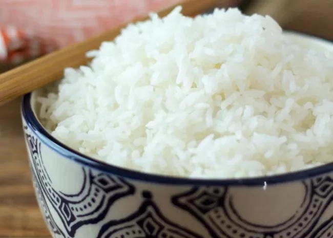

Rice

There are many varieties of rice: white rice, brown rice, short-grain rice, long-grain rice;
and different ways to cook rice: stovetop, rice cooker, multi-cooker (Instant Pot), microwave, and oven-baked.
Here's an overview of the many different varieties of rice you can buy, along with tips for how to cook different
kinds of rice so it turns out perfectly every time.
- 2 c. water
- 1 c. white long grain rice
- 1 tbsp. butter
- Kosher salt
- In a medium saucepan over medium heat, bring water to a boil. Add rice, butter, and a large pinch of salt.
- Bring pan back to a simmer then lower heat and cook, covered, 18 minutes, or until rice is tender and water is absorbed.
- Remove from heat and let sit, covered, 5 minutes, then fluff with a fork and serve.